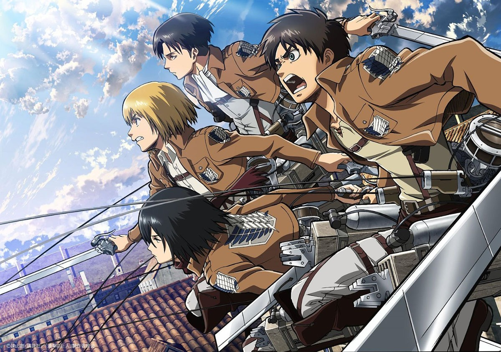
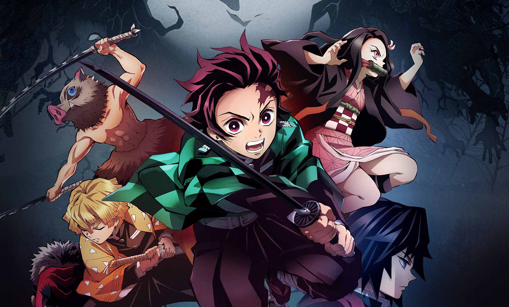
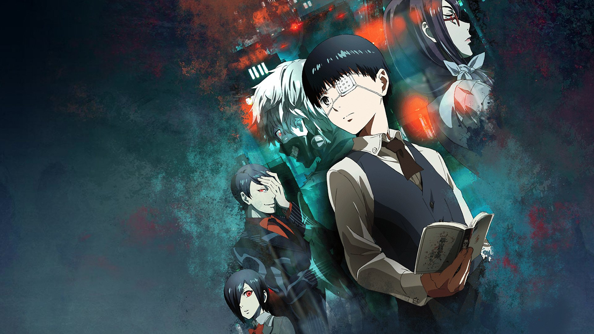
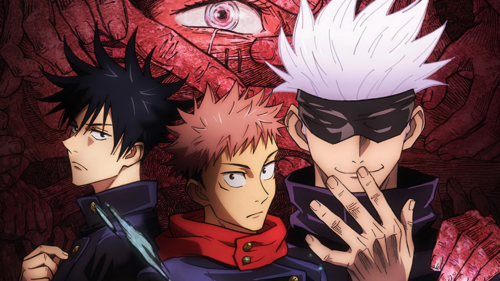
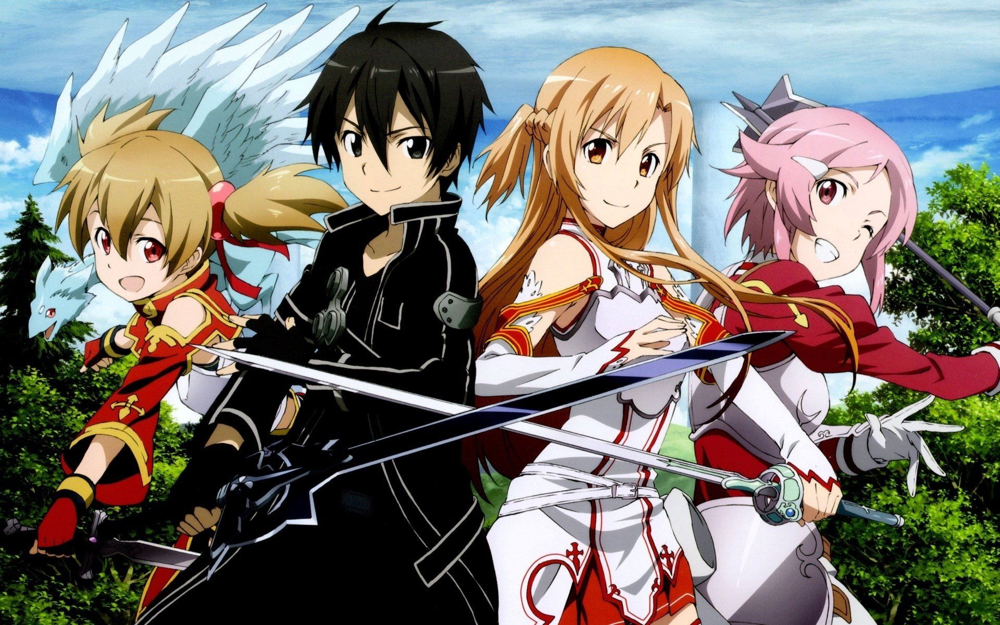
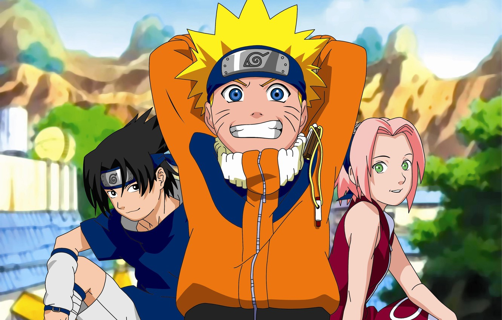
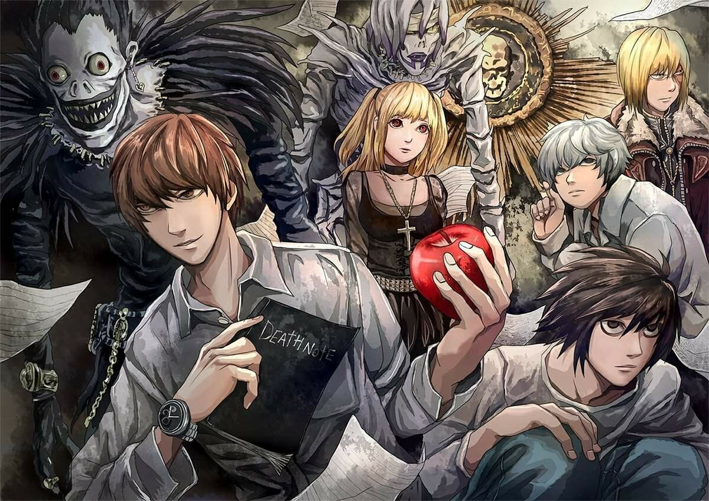
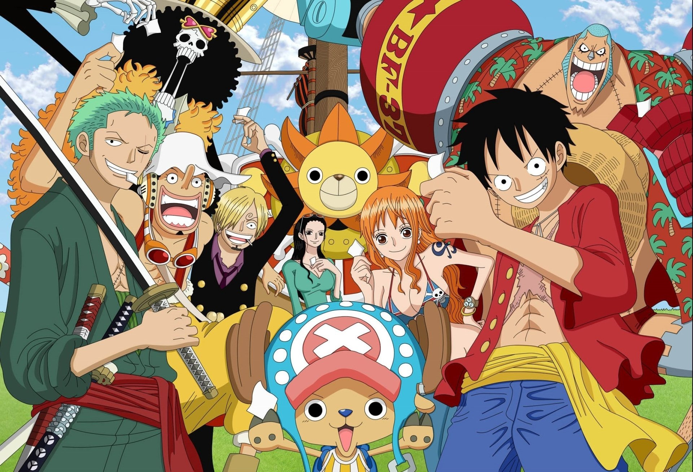
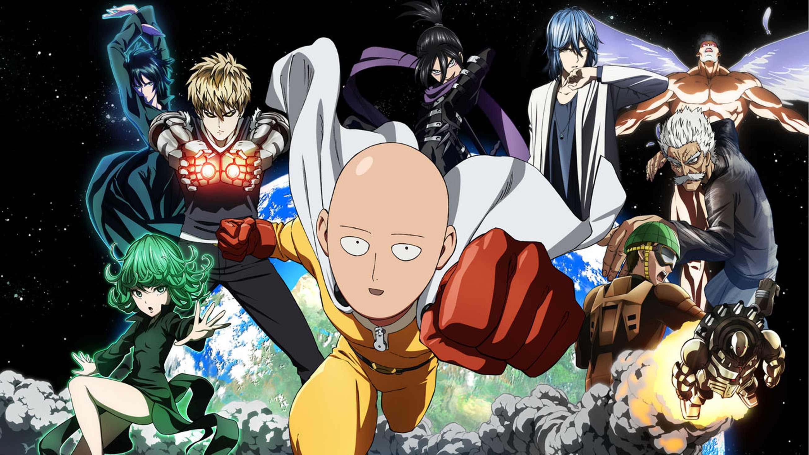

Самые популярные


Атака титанов
4 сезона
87 серий
X
Атака титанов
Загнанное в угол человечество доживает свои последние дни под гнётом титанов - таинственных созданий, терроризирующих человеческую расу. Выжившие ютятся за стенами крупного поселения с собственным правительством, представляющим последний оплот централизованной власти в мире. Там же живёт и юноша по имени Эрен, проводя детство в относительной безопасности, пока не происходит событие из ряда вон: титаны прорываются в город, уничтожая всё на своём пути. После вторжения гигантов Эрен становится сиротой и клянётся уничтожить всех до единого титанов. На пути к своей цели он и его друзья вступают в отряд разведки, занимающийся вылазками за стену. Герой ещё не знает...

Клинок рассекающий демонов
3 сезона
44 серий
X
Клинок рассекающий демонов
Ходят слухи, что в местных лесах обитают кровожадные демоны, которые питаются человеческой плотью. Вот только последние инциденты были так давно, что люди позабыли об опасностях дремучих лесов. Многие жители деревни считают, что сказание о демонах это просто страшилки и легенды. Танджиро Камадо живёт в маленькой деревушке, и он заботится о своей семье, ведь недавно исчез отец. Парню приходится работать на шахте и продавать уголь в городе. Очередная поездка на рынок не сулила неприятностей, но по возвращении домой парня ожидало чудовищное зрелище. Камадо увидел окровавленные тела родственников, которые были...

Токийский гуль
3 сезона
48 серий
X
Токийский гуль
Япония, альтернативная реальность. В этом мире параллельно с людьми существует раса гулей - созданий, стоящих выше людей в пищевой цепи, то есть людоедов. Тем не менее, людям удаётся сосуществовать с ними в относительном мире, однако стычки время от времени случаются. Под такую раздачу попадает обычный школьник Канеки, который становится жертвой могущественной женщины-гуля. Чудом пережив нападение, Канеки узнаёт, что взамен утраченных человеческих органов ему пересадили органы гуля. Кто же он теперь - человек или гуль? Ему предстоит пройти долгий путь самоопределения и найти своё место в мире.

Магическая битва
1 сезон
24 серии
X
Магическая битва
Ни для кого из граждан не будет секретом, что в мире людей существуют потусторонние силы, которые всячески пытаются стать частью их жизни. Демонические сущности всегда жаждут полакомиться человеческой душой. Демонологам давно известна легенда о великом демоне Рёмэн Сукун, который творил ужасные вещи. Вот только лучшим экзорцистам удалось уничтожить демоническое отродье и запечатать части его тела по всему миру. Никто и не мог подумать, что спустя несколько столетий печать ослабнет. Юдзи Итадори должен был вступить в атлетический кружок, но он выбрал клуб оккультистов. Школьнику нравится изучать разные мистические...

Мастера меча онлайн
3 сезона
96 серий
X
Мастера меча онлайн
Представление о видеоиграх в корне изменилось с введением технологии Полного Погружения, повышающей уровень восприятия происходящего в игре до максимального и полностью перекрывающей связь с реальным миром. Данная технология применяется для создания революционной в жанре VRMMORPG игры под названием «Мастера Меча Онлайн», которая соответствует всем стандартам многопользовательских ролевых игр с одной лишь разницей в том, что игрок ощущает себя своим персонажем. Ажиотаж вокруг игры растёт столь стремительно, что на старте к серверу подключается великое множество человек. Но тут и открывается страшная тайна, скрывавшаяся за многообещающим проектом: выйти из игры невозможно...

Наруто
2 сезона
720 серий
X
Наруто
Познакомьтесь с Наруто Узумаки – юным ниндзя, которому предстоит пройти долгий путь к своей мечте. Однако для достижения любой цели нужны верные товарищи, которых Наруто предстоит обрести. Эта история о том, как найти в себе силы не сдаваться, когда никто вокруг не верит в успех. А ещё это исключительная и неповторимая в своём роде классика – самое занимательное приключение ниндзя всех времён!

Тетрадь смерти
1 сезон
37 серий
X
Тетрадь смерти
Жить человеку или не жить определяют боги смерти, рано или поздно внося его имя в особую тетрадь. Одна из таких тетрадей попадает в мир людей на территорию современной Японии. А что случится, если тетрадь бога Death Note окажется в руках человека? Ответ очевиден: он возомнит себя богом. Это и происходит с Ягами Лайтом - среднестатистическим, но не совсем обычным старшеклассником, мечтающим построить утопию на трупах преступников.
«Тетрадь Смерти» обрела невероятную популярность в начале века онлайн, сделав историю противостояния Киры и гениального детектива L классикой детективного жанра и просто культовым аниме.

Ван пис
1 сезон
1040 серий
X
Ван пис
Бороздящие просторы Гранд-Лайна пираты уже отчаялись найти таинственное сокровище легендарного Короля Пиратов Роджера, сулящие нашедшему их счастливчику роскошную жизнь. Спустя годы для большинства авантюристов мифический клад превратился в красивую легенду, но только не для молодого Монки Д. Луффи, который всей душой мечтает найти тайник Роджера, доказав, что достоин зваться новым Королём Пиратов. Единственное, что Луффи ставит выше собственной мечты, так это своих друзей, которые помогают юному капитану на пути к славе.

Ванпанчмен
2 сезона
24 серии
X
Ванпанчмен
Каково живётся самому сильному человеку в мире? Не так уж и классно, как может показаться на первый взгляд. Когда ты всего достиг, научившись выносить злодеев буквально с одного удара, жизнь теряет краски, пропадает сам интерес к жизни, ведь не к чему стремиться. С подобным внутренним кризисом сталкивается Сайтама - самый сильный человек на планете, погрязший в рутине и потерявший радость от побед над монстрами и преступниками. Его знакомство с киборгом Геносом открывает Сайтаме новый мир супергероев - друзья записываются в супергеройскую ассоциацию, чтобы от имени правосудия бороться со злом, однако сильнейшему в мире всё так же скучно…